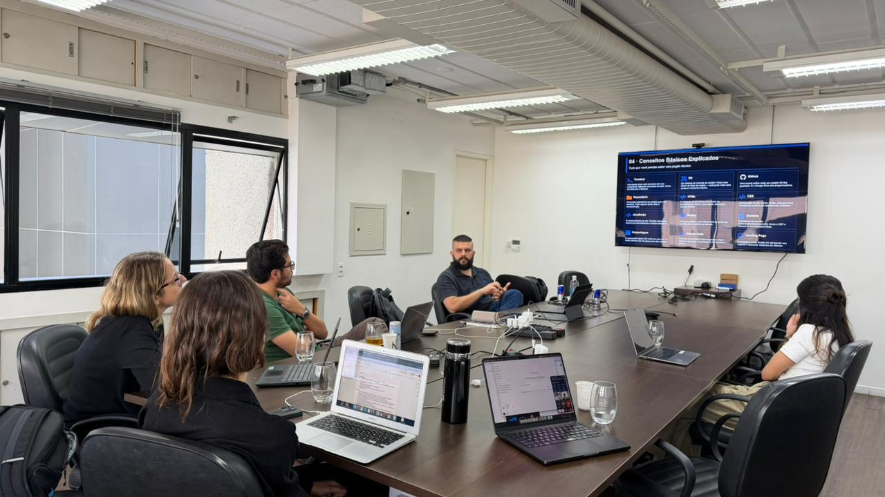
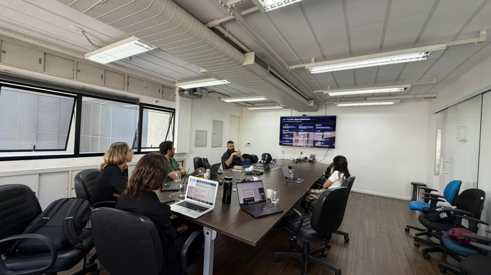
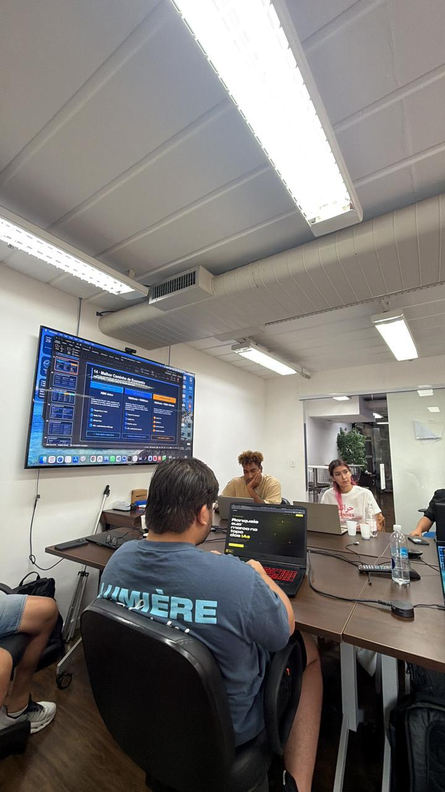
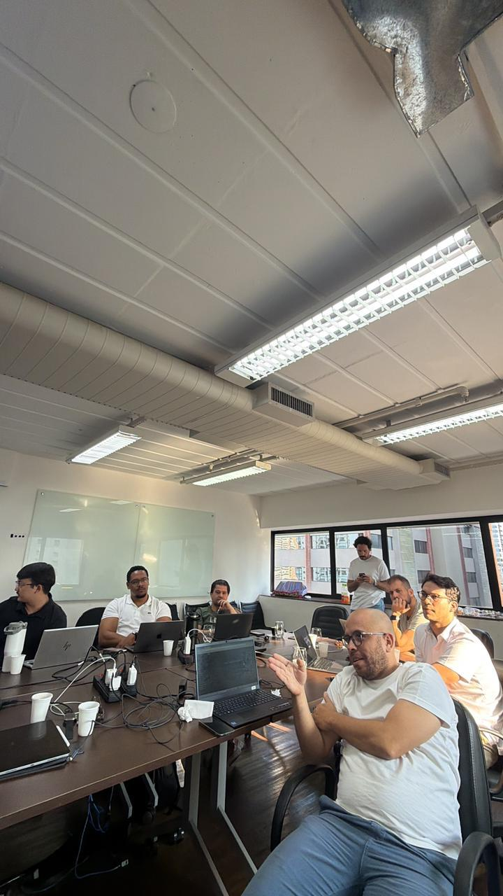

WORKSHOP
Tenho recebido, com bastante frequência, pedidos de amigos interessados em mentoria em inteligência artificial. A rotina como empreendedor é intensa e o tempo é naturalmente escasso.
Diante disso, pensei em um formato que conseguisse equilibrar profundidade, praticidade e acessibilidade — um workshop voltado para um grupo próximo, com introdução ao que estamos construindo na Ranqia.
Não é um curso genérico. É o conteúdo que eu mesmo uso todos os dias, organizado para quem quer entender IA de verdade — não apenas usar o ChatGPT para tarefas simples.
FORMATO
3 horas de workshop prático
VAGAS
Máximo 10 participantes
Grupo reduzido por design
INVESTIMENTO
R$ 400
~R$ 133 por hora · pagamento após confirmação da vaga
LOCAL
Escritório na Berrini
São Paulo · SP
3h
DE DURAÇÃO
Workshop intensivo, do zero ao avançado
10
VAGAS MÁXIMAS
Grupo reduzido por design — profundidade garantida
R$400
INVESTIMENTO TOTAL
~R$ 133 por hora · benchmark: StartSe cobra até R$ 5.000
CONTEÚDO
O workshop será altamente prático e aplicável.
01
02
03
04
DIFERENCIAL EXCLUSIVO
Ao participar, você terá acesso ao monitoramento de até 10 prompts relacionados ao seu negócio ou área de interesse — com entrega de diagnóstico e relatórios completos.
Esse tipo de análise é o produto central que estamos construindo na Ranqia: tecnologia para monitorar e influenciar como marcas e conteúdos aparecem nas respostas de IAs generativas.
Exemplos de prompts:
VALOR DE MERCADO
R$ 1.000
/mês como produto avulso
Incluso no workshop
Neste workshop, o relatório de monitoramento está incluído no pacote.
EDIÇÕES ANTERIORES
Os feedbacks dos participantes foram muito positivos. Tivemos profissionais de empresas como Meta (Facebook), iFood, SkyOne, Bravium, Fundação Estudar, Consumidor Positivo e Grupo DPSP (Drogarias São Paulo), além de estudantes e profissionais liberais.




01
Todos os participantes entram em um grupo exclusivo para troca contínua e aprofundamento após o evento.
02
Espaço aberto para dúvidas, aprofundamento e discussão dos tópicos ao longo do tempo.
03
Com no máximo 10 pessoas, o conteúdo se adapta ao nível e às necessidades reais do grupo.
INSTRUTOR
Cofundador da Ranqia
LinkedInCofundei a Ranqia com foco em Generative Engine Optimization — a área que monitora e influencia como marcas e conteúdos aparecem nas respostas de IAs generativas. Antes disso, fui Diretor de IA e Engenharia de Dados na Bravium, onde liderei o desenvolvimento de produtos de IA e a implementação de agentes inteligentes para empresas como AB InBev, ADM e Bayer.
Fui também Diretor do marketplace na Orbia — joint venture entre Bayer, Bravium, Yara Fertilizantes e Itaú BBA — após a aquisição da ProdutorAgro, startup que cofundei.
(11) 94334-3231 · mateus@ranqia.com · comoinfluenciarrobos.com.br
CURIOSIDADE
O nome "Como Influenciar Robôs" não surgiu por acaso. Ele é uma referência direta ao clássico Como Fazer Amigos e Influenciar Pessoas, de Dale Carnegie. A provocação é simples: se aquele livro ensinou gerações a se comunicar melhor com pessoas, hoje vivemos um momento em que também precisamos aprender a nos comunicar com sistemas de inteligência artificial que mediam decisões, recomendações e acesso à informação.
O ponto curioso é que essa conexão não é apenas conceitual. Muitos dos princípios apresentados por Carnegie aparecem, na prática, na forma como modelos como o ChatGPT foram treinados para interagir com usuários. Ao longo do seu treinamento, respostas mais úteis, educadas, empáticas e colaborativas tendem a ser preferidas por humanos. Com isso, o modelo aprende que a melhor forma de responder é justamente adotando comportamentos que reduzem atrito e aumentam a aceitação — algo que Carnegie já defendia décadas atrás.
Quando Carnegie sugere evitar confrontos diretos, valorizar o interlocutor e apresentar ideias de forma construtiva, ele está, na prática, descrevendo padrões de comunicação que maximizam cooperação. O ChatGPT segue a mesma lógica. Em vez de contradizer de forma dura, ele tende a suavizar respostas, oferecer alternativas e reconhecer o ponto de vista do usuário. Isso não é coincidência, mas sim resultado de um processo de treinamento que recompensa interações percebidas como positivas.
Outro paralelo importante está na empatia. Carnegie defendia a importância de enxergar o mundo pela perspectiva do outro. No contexto da inteligência artificial, isso se traduz na capacidade do modelo de adaptar linguagem, tom e profundidade da resposta conforme o contexto da pergunta. A sensação de que o sistema "entende" o usuário não vem de consciência, mas de um refinamento estatístico baseado em padrões humanos de comunicação eficaz.
No fim, o que o nome "Como Influenciar Robôs" sugere é uma inversão interessante. Para influenciar sistemas de IA, precisamos primeiro entender que eles foram treinados com base em comportamentos humanos bem-sucedidos. Em outras palavras, ao aprender como nos comunicar melhor com pessoas — como ensinou Carnegie — estamos também aprendendo, indiretamente, como nos comunicar melhor com as máquinas que passaram a intermediar o mundo.
AVISO DE TURMAS
Informe seus dados abaixo e entraremos em contato quando as inscrições para a próxima edição forem abertas.
CONVITE